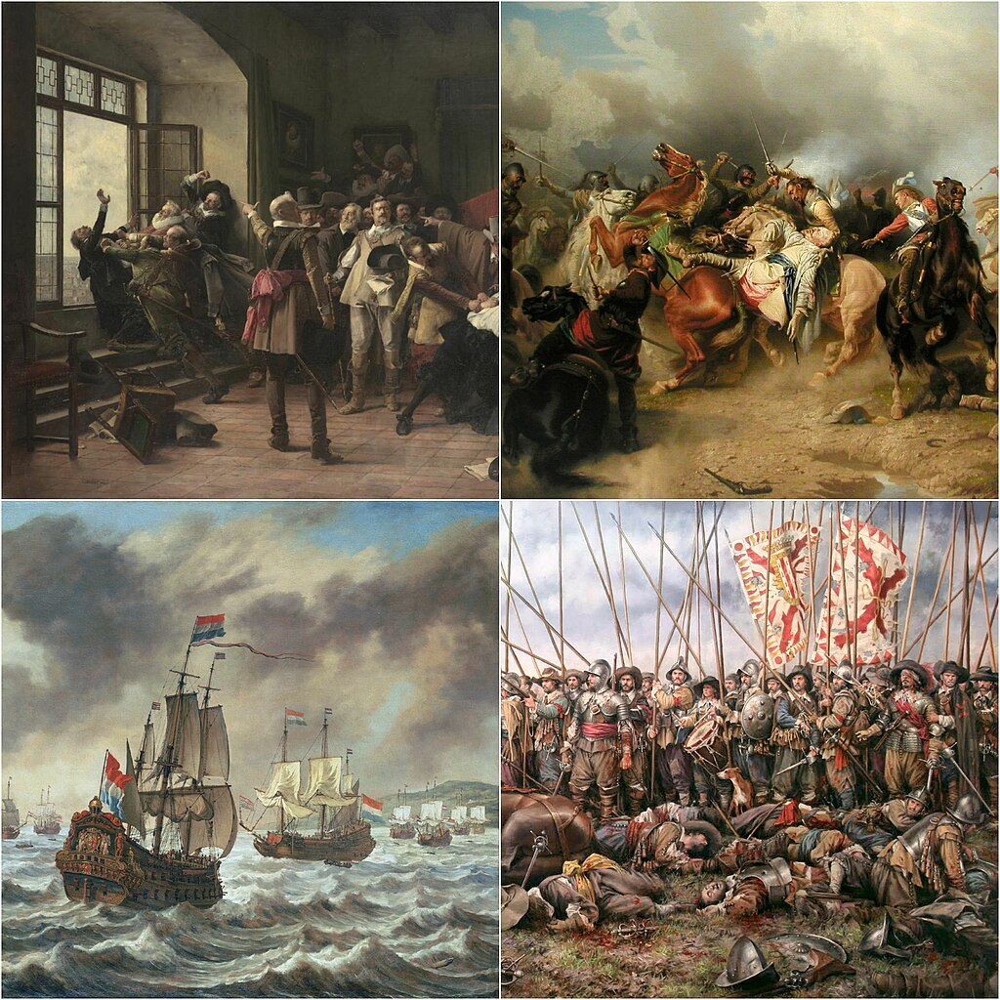
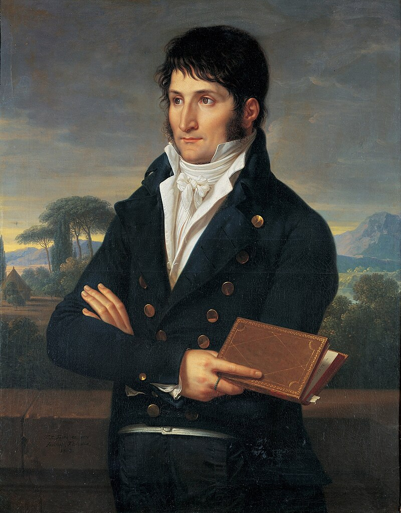
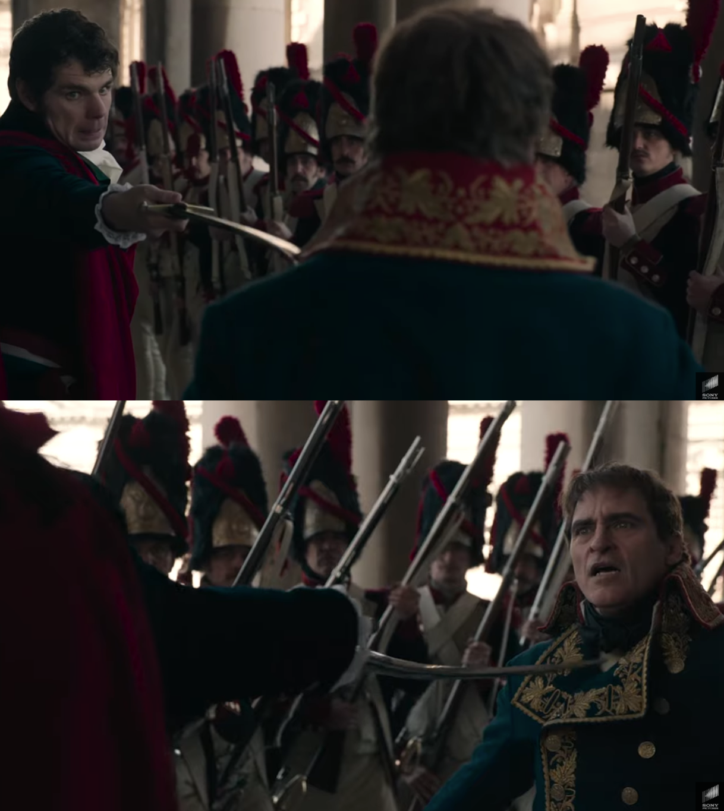
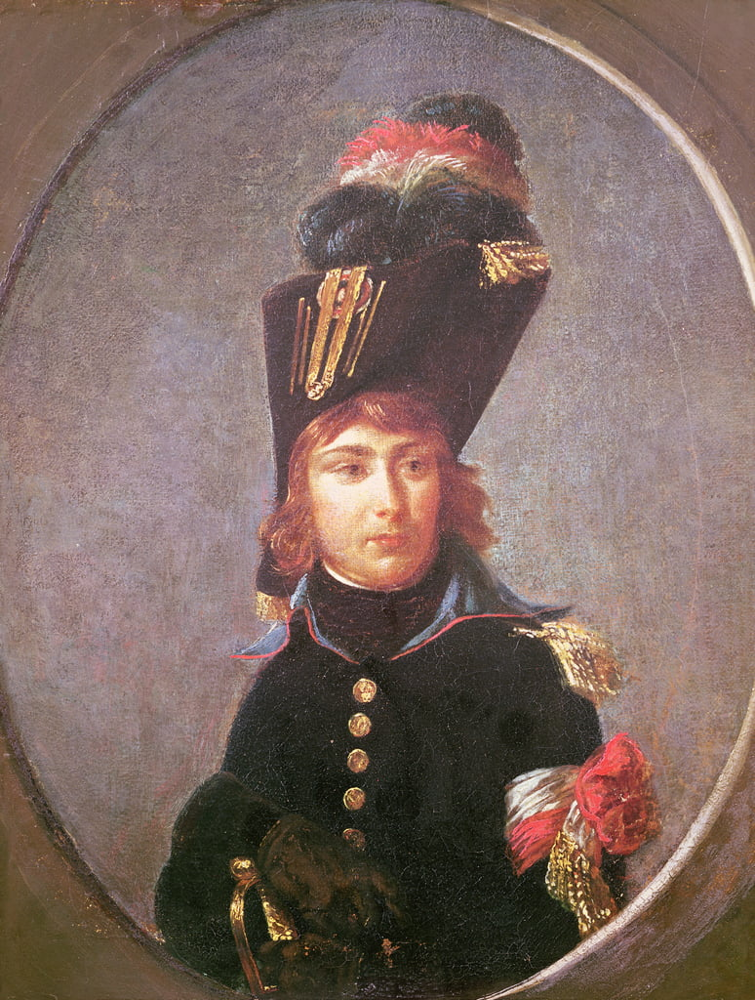
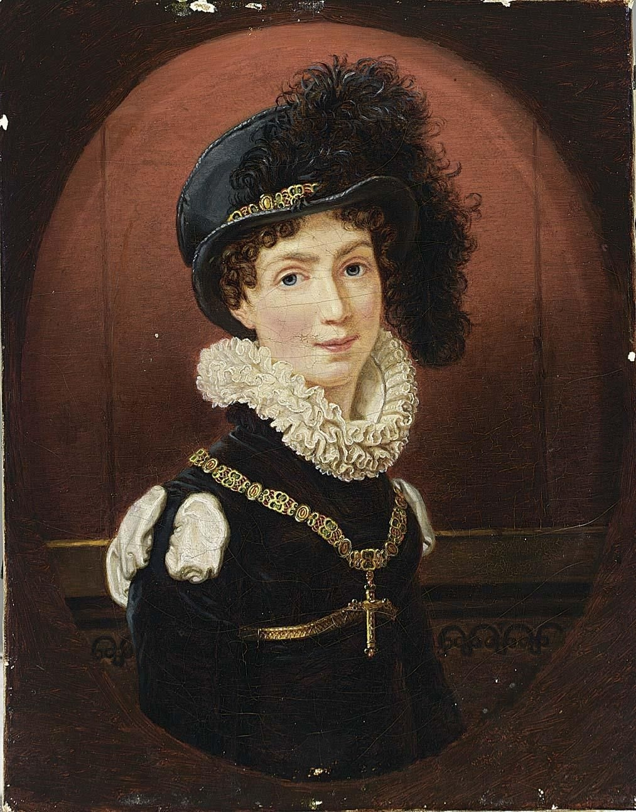
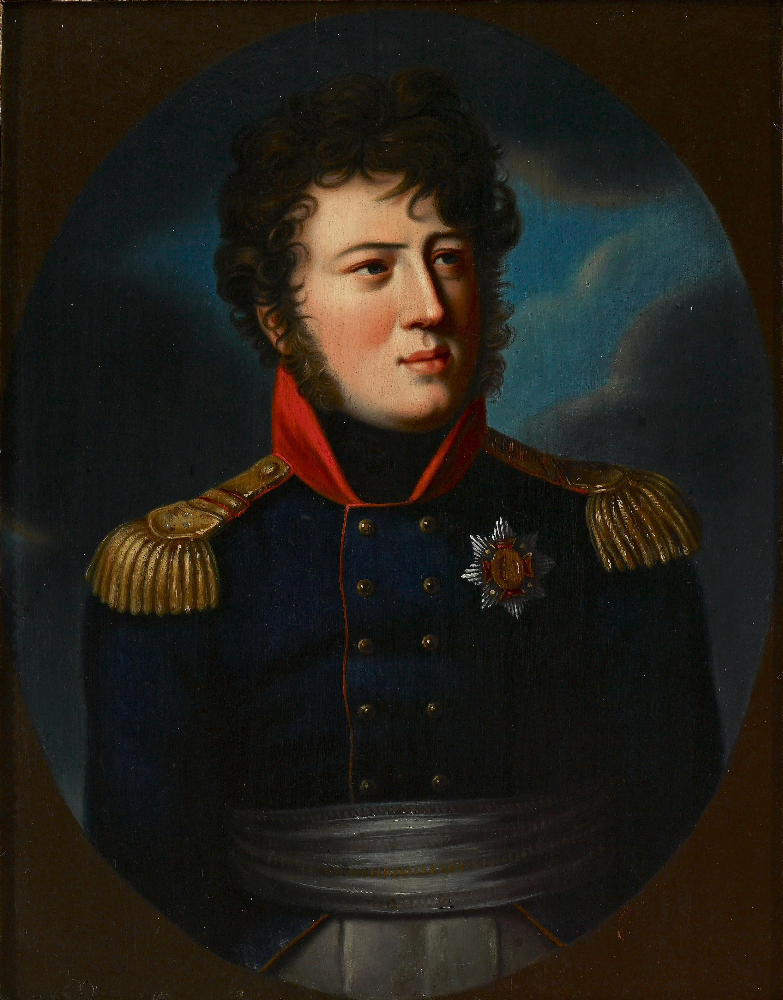

바이에른의 배신 (6) - 외젠의 결혼 (상)
게시: 2024-09-16T06:30:12+09:00
프랑스가 독일을 프랑스에 위협적이지 않은 상태로 유지하기 위해서는 독일권이 오스트리아와 프로이센을 두 축으로 자잘하게 분열되어 있는 것이 유리했습니다. 그건 나폴레옹에게도 마찬가지였고, 그러기 위해서는 그런 자잘한 독일 국가들 중 가장 덩치가 컸던 바이에른을 친프랑스 성향으로 굳히는 것이 꼭 필요했습니다. 그런 상황에서 노골적인 친프랑스 정책을 펼치는 몽겔라스가 조종하는 막시밀리안 1세가 바이에른 선제후가 된 것은 나폴레옹에게도 매우 반가운 일이었습니다. 하지만 굳이 나폴레옹이 가부장적인 지중해성 남자라는 것을 고려하지 않더라도, 당시는 이제 막 19세기로 접어든 시대였고 그 시대 유럽에서는 동맹을 굳히는 단단한 수단으로 지배 가문끼리의 정략 결혼만한 것이 없었습니다.

(1618년부터 1648년까지 벌어졌던 신구교간의 종교전쟁이자 패권전쟁이었던 30년 전쟁은 프랑스로서는 독일을 영구적으로 분열시킬 수 있는 절호의 기회였고, 프랑스의 명재상인 리셜리외 추기경과 마자랭 추기경은 그 기회를 놓치지 않았습니다. 이 전쟁은 개신교와 카톨릭, 그리고 남부 독일과 북부 독일에 오랜 기간 남는 상처를 남겼고, 리셜리외와 마자랭은 본인들이 카톨릭이면서도 독일의 개신교를 지원했던 보람을 느꼈을 것입니다.) 나폴레옹에게는 친자식이 없었지만 조세핀이 전남편과의 사이에서 낳은 외젠 보아르네(Eugène Rose de Beauharnais)가 있었습니다. 보통 외젠에 대해서 별 능력은 없으나 의붓아빠 덕분에 출세한 젊은이라고 알려져 있습니다만, 이는 외젠을 상당히 불공평하게 평가한 것입니다. 흔히 나폴레옹의 친인척 중에서 가장 유능한 인물로는 나폴레옹의 동생이자 나폴레옹의 쿠데타에도 참여했던 루시앙(Lucien Bonaparte)을 뽑습니다만, 루시앙은 자코뱅답게 나폴레옹의 황제 등극에 반대하면서 형과 사이가 벌어져 역사에서 두각을 드러내지 못했습니다. 그런 루시앙을 빼면, 외젠이야말로 보나파르트 친인척 중에서 가장 뛰어난 인물이었습니다. 뮈라도 보나파르트 가문의 친인척이지만, 전장에서의 무용을 빼면 행정적인 측면이나 부하들을 챙기는 리더쉽 측면에서는 뮈라보다도 외젠이 더 뛰어난 것은 확실했습니다. 가령 1812년 모스크바로부터의 후퇴 작전에서, 뮈라가 저지른 무책임한 행동에 비하면 그 뒤를 이어받은 외젠은 정말 대단한 책임감과 의지를 보여주었습니다.

(나폴레옹의 바로 아래 동생인 루시앙 보나파르트입니다. 그는 형과 사이가 틀어진 뒤 이탈리아에서 살다가, 프랑스군이 이탈리아를 점령하자 형을 피해 미국으로 건너가다 영국 해군에 나포되어 본의 아니게 영국에 정착하여 후대를 받았습니다. 나폴레옹은 그가 고의로 영국과 야합했다고 오해하고 그와 완전히 단교해버렸는데, 백일천하 때 루시앙은 형에게 달려와 힘을 보탰습니다.)

(루시앙이 브뤼메르 쿠데타 때 망설이는 근위대 병사들 앞에서 나폴레옹의 가슴에 칼을 겨누고 '만약 이 사람이 우리의 자유를 빼앗으려 한다면 내가 직접 내 형을 죽이겠다'라며 병사들을 설득했던 것은 역사적으로도 유명한 장면이고, 최근 개봉되어 졸작이라는 악평을 들었던 리들리 스콧 감독의 영화 '나폴레옹'에서도 그 장면이 묘사되었습니다. 외젠은 친아버지가 공포정치 와중에 처형된 다음 해인 1795년부터 14세의 어린 나이로 방데(Vendée) 지방의 반란진압군에서 행정병으로 복무했습니다. 그러다 나폴레옹과 재혼한 어머니 조세핀이 영향력을 발휘하여 1년만에 다시 파리로 불러들였는데, 이후로는 소년 장교로서 의붓아버지인 나폴레옹을 따라다녔습니다. 나폴레옹의 이탈리아 원정은 물론 이집트 원정까지도 동행했는데, 기라성 같은 나폴레옹의 부하들과도 꽤 좋은 관계를 유지하며 두루 친하게 지냈던 것 같습니다. 나폴레옹은 어린 외젠을 딱 자신의 의붓아들로서, 지나치게 애지중지하지도 지나치게 쌀쌀맞지도 않게 대우했습니다. 심지어 이집트 원정 기간 중 조세핀이 바람이 피운 것이 발각되어 난리가 났을 때에도, 외젠에 대해서는 조세핀의 아들로서가 아니라 자기 몫을 다하는 측근 참모 장교로서 꽤 공정하게 대했으며, 조세핀과 헤어지려던 나폴레옹을 설득하여 두 사람을 화해시킨 것도 외젠과 그의 누이 오르탕스였습니다. 그런 것을 보면 외젠은 아무 능력 없이 그저 안하무인인 재벌 2세 같은 사람은 아니었고, 실무 처리 능력과 함께 사람들과의 친화력, 소위 말하는 피플 스킬(people skill)을 가진 사람이었나 봅니다.

(1798년, 당시 17세의 나이로 나폴레옹의 부관으로 있던 이탈리아 방면군 소속 외젠의 초상화입니다. 잘 그린 그림 같지는 않은데, 그래도 그로(Antoine-Jean Gros)의 그림입니다. 아마 그로도 바쁜 와중이라 사람의 중요성에 따라 대충 그리기도 했나봐요.) 이런 외젠을 내세워 바이에른의 통치자인 막시밀리안 1세와 혼담을 시작한 것은 나폴레옹으로서는 자연스러운 것이었습니다. 나폴레옹은 1804년 11월부터 주바이에른 대사를 통해 넌지시 혼사를 이야기했습니다. 외젠의 혼인 상대는 막시밀리안 1세의 전처 소생이자 맏딸로서, 외젠보다 7살 어렸던 아우구스타(Augusta Amalia Ludovika Georgia von Bayern) 공주였습니다. 1804년 당시 16살의 어린 나이였던 아우구스타 공주는 미모로 인해 이미 유럽 왕가들 사이에 괜찮은 신부감으로 소문난 아가씨였습니다. 이렇게 눈에 넣어도 아프지 않을 맏딸을 나폴레옹 가문으로 시집 보내게 된 막시밀리안 1세와 카롤라인(Friederike Karoline Wilhelmine von Baden) 왕비는 얼마나 기뻤을까요? 전혀 그렇지 않았습니다. 몽겔라스조차도 어디까지나 프랑스와 나폴레옹을 이용하여 일루미나티의 신념을 펼치는 것이 목적이었을 뿐 인간적으로 나폴레옹을 존경하고 흠모하지는 않았습니다. 그저 사람 좋은 귀족에 불과했던 막시밀리안 1세는 물론이고, 원래부터 반(反)프랑스 진영에 속했던 카롤라인 대공비는 어디서 굴러먹던 개뼈다귀 같은 천한 인간에게 딸을 보낸다는 이야기에 기겁을 했습니다. 아마 황제 나폴레옹이 훨씬 더 젊고 미혼이라서 본인이 직접 아우구스타 공주와 결혼하겠다고 해도 근본없는 코르시카 출신이라고 싫어했을 것인데, 나폴레옹의 아들도 아니고 그저 의붓아들이자 온갖 뒷소문만 무성한 황후 조세핀의 아들인 외젠 따위와? 말도 안 되는 이야기였습니다.

(아우구스타 공주의 10대 시절 초상화입니다. 제 눈에는 대단한 미인처럼 보이지는 않습니다만... 나폴레옹도 아우구스타를 실제로 만나보고는 '상자에 든 tasse à café (커피잔) 같다'는 희한한 평가를 남겼다고 합니다.) 바이에른 궁정은 재빨리 움직였습니다. 아직 넌지시 눈치로만 제안이 왔으니 망정이지, 나폴레옹 쪽에서 공식적으로 팡파레를 울리며 청혼을 해오는데 그걸 거부했다가는 무슨 봉변을 당할지 모르는 일이었습니다. 막시밀리안 1세와 카롤라인 대공비는 즉각 아우구스타를 바덴의 대공 계승권자인 카알 폰 바덴(Karl von Baden)과 약혼시켜 버렸습니다. 참고로, 아우구스타 공주는 막시밀리안 1세의 일찍 사망한 전처 소생이었고 카롤라인 대공비는 후처였는데, 카알 폰 바덴은 바로 이 카롤라인 대공비의 친동생이었습니다. 유럽 왕가의 족보 개념은 우리로서는 굉장히 충격적이긴 합니다. 이 약혼은 일단은 두 대공 가문 사이에 구두로만 이루어진 비공식적인 것이었습니다. 이 소식은 유럽 전역에 깔린 스파이들을 통해 나폴레옹의 귀에 잽싸게 들어갔습니다. 나폴레옹에게도 이건 자존심보다 더 중요한 문제가 걸린 중대사였습니다. 황후 조세핀도 끼어든 것입니다. 조세핀이 흔히 악녀로 묘사되긴 합니다만 그녀도 엄마였고, 모든 엄마는 아들에게 좋은 혼사를 맺어주는 것이 소원 중의 하나였습니다. 어린 나이에 친아버지를 단두대에서 잃어버린 불쌍한 아들이 독일 공주님의 정식 부마가 된다? 아직 진짜 유럽 왕가에 대해 은근히 자격지심을 느끼던 조세핀에게 이건 꼭 이루어야 할 숙원이 되었고, 외젠의 결혼 문제는 더 이상 독일권 견제나 동맹 따위를 넘어서는 중대사가 되었습니다. 나폴레옹의 지시를 받은 프랑스 외무부는 여러 사절을 바이에른과 바덴으로 보내 아우구스타와 카알의 약혼이 공식적인 것이 되지 않도록 온갖 노력을 기울여야 했습니다.

(아우구스타 공주의 남편이 될 뻔했던 아우구스타 공주의 외삼촌 카알 폰 바덴(Karl Ludwig Friedrich)입니다. 아우구스타 공주는 이 남자를 싫어했다고 하는데, 확실히 잘 생긴 남자는 아니네요. 원래 아우구스타 공주는 엄격한 성격의 새엄마인 카롤라인 대공비를 좋아하지 않았는데, 한참 뒤에야 점차 사이가 좋아졌다고 합니다.) 아무리 아우구스타 공주가 절세미녀라고 해도, 이렇게 나폴레옹이 두 눈을 시퍼렇게 뜨고 있는데 선듯 아우구스타 공주와 카알의 약혼을 공식 발표하는 것은 바덴 궁정에서도 상당히 부담스러운 일이었습니다. 약간 공처가였던 막시밀리안 1세는 카롤라인 대공비에게 등떠밀려 바덴 측을 향해 얼른 약혼 발표를 서두르자고 졸라댔으나, 바덴에서는 이 핑계 저 핑계를 대며 무척이나 주저하는 모습을 보였습니다. 일이 이렇게 엉망진창으로 돌아가는 가운데 가장 당혹스러운 사람은 사실 막시말리안도 카롤라인도 아니었고 단번에 쫄보로 낙인이 찍히면서 체면을 있는 대로 구기게 된 바덴 대공도 아니었습니다. 바로 아우구스타 공주였습니다.

Source : The Life of Napoleon Bonaparte, by William Milligan Sloane Napoleon and the Struggle for Germany, by Leggiere, Michael V With Napoleon's Guns by Colonel Jean-Nicolas-Auguste Noël https://en.wikipedia.org/wiki/Princess_Augusta_of_Bavaria https://en.wikipedia.org/wiki/Lucien_Bonaparte https://www.thenapoleonicwars.net/forum/key-figures-of-the-era/eugene-beauharnais-and-the-wittelsbach-family https://en.wikipedia.org/wiki/Caroline_of_Baden https://www.youtube.com/watch?v=iaJ3axhIGNk